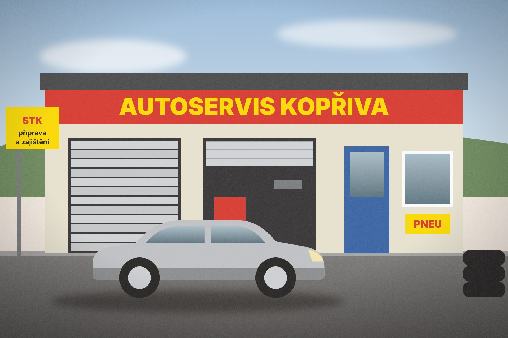

RYCHLÝ KONTAKT
Josef Kopřiva
tel.: 123 456 789
mobil: +420 123 555 010
servis@autoservis-kopriva.example
OTEVÍRACÍ DOBA
Po–Pá: 7:00 – 17:00
So: 8:00 – 12:00 (po dohodě)
Ne: zavřeno
AKCE MĚSÍCE!
Přezutí kompletních kol 600 Kč
Plnění klimatizace 990 Kč
více zde >>
PROČ K NÁM?
» tradice od roku 1994
» opravy všech značek
» záruka 24 měsíců
» férové ceny bez překvapení
» náhradní vozidlo po dohodě
Počet návštěv: 0 0 4 7 1 3 9
VÍTEJTE NA STRÁNKÁCH AUTOSERVISU KOPŘIVA!

Jsme rodinný autoservis v Lhotce nad Bystřicí, který se už od roku 1994 stará o vozy zákazníků z celého okolí. Servis založil pan Josef Kopřiva v garáži u rodinného domu a v roce 2003 se přestěhoval do současné dílny v Nádražní ulici, kde máme tři stání se zvedáky, pneuservis a vlastní diagnostiku. Od roku 2011 pracuje v servisu také syn Martin, který má na starosti diagnostiku a elektroniku moderních vozů. Opravujeme osobní i lehké užitkové vozy všech značek, nejčastěji u nás uvidíte škodovky, volkswageny, fordy, renaulty a hyundaie, ale poradíme si i s méně obvyklými značkami.
Zakládáme si na tom, že zákazníkovi vždy předem řekneme, co oprava obnáší a kolik bude stát. Pokud při opravě narazíme na další závadu, nejdříve vám zavoláme a bez vašeho souhlasu nic navíc neděláme. Vyměněné díly vám na požádání ukážeme nebo vrátíme. Na provedenou práci poskytujeme záruku 24 měsíců.


Co pro vás uděláme
Provádíme pravidelné servisní prohlídky podle předpisu výrobce, výměny oleje a filtrů, opravy brzd, podvozků a výfuků, výměny rozvodů a spojek, seřízení geometrie, plnění a dezinfekci klimatizací, počítačovou diagnostiku a opravy elektroinstalace. V našem pneuservisu vám přezujeme, vyvážíme a uskladníme pneumatiky. Vůz také připravíme na technickou kontrolu a na STK s ním zajedeme za vás. Podrobný přehled služeb najdete ZDE.
!!! AKCE !!!
Přezutí kompletních kol za 600 Kč a plnění klimatizace včetně dezinfekce za 990 Kč. Objednejte se telefonicky na čísle 123 456 789.
Napsali o nás
„K panu Kopřivovi jezdím s Octavií přes deset let. Vždycky mi předem řekl, kolik to bude stát, a nikdy to nebylo víc.“ – Jana, Lhotka nad Bystřicí
„Ve značkovém servisu mi chtěli měnit celou klimatizaci. Tady našli prasklou hadičku a bylo hotovo za hodinu.“ – Petr V.
© 2013 Autoservis Kopřiva, Nádražní 214, Lhotka nad Bystřicí, PSČ 123 45, IČ: 12345678, tel. 123 456 789, e-mail: servis@autoservis-kopriva.example
Vytvořeno v systému WebSnadno · Všechna práva vyhrazena · Kopírování textů a fotografií bez souhlasu majitele je zakázáno!